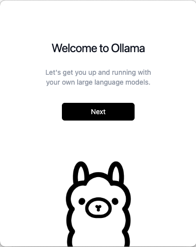

1. 你好，Ollama
大语言模型服务的构建其实很简单，只要老实返回“服务器繁忙，请稍后重试”就能吓唬住铁粉。但是启动个本地大语言模型就减少了被耍猴的风险，因此我们首先用Go语言开发的Ollama来在本地启动一个迷你版大语言模型。
1.1 安装Ollama
和当年的Docker类似，Ollama也是Go语言开发的轻量级的本地大模型（LLM）运行框架。Ollama的名字来源于"Llama"（美洲羊驼），但在开头加了一个字母"O"可能表示Open（开放）或Offline（离线）的意思。Ollama的Logo和吉祥物也是一个美洲羊驼。
Ollama通过CGO技术集成了一些C/C++库，他支持 Llama 2、Mistral、Gemma、DeepSeek 等模型，且支持 CPU 和 GPU 加速。首先去官网 https://ollama.com/ 下载安装包安装。macOS操作系统安装过程如图：

安装完成后在命令行查看ollama命令帮助。
$ ollama -h
Large language model runner
Usage:
ollama [flags]
ollama [command]
Available Commands:
serve Start ollama
create Create a model from a Modelfile
show Show information for a model
run Run a model
stop Stop a running model
pull Pull a model from a registry
push Push a model to a registry
list List models
ps List running models
cp Copy a model
rm Remove a model
help Help about any command
Flags:
-h, --help help for ollama
-v, --version Show version information
Use "ollama [command] --help" for more information about a command.
1.2 下载大模型
打开Ollame的大模型库页面 https://ollama.com/library/deepseek-r1，找到最小的DeepSeek模型执行：
$ ollama run deepseek-r1:1.5b
pulling manifest
pulling aabd4debf0c8... 3% ▕ ▏ 27 MB/1.1 GB 3.0 MB/s 5m57s
...
deepseek-r1:1.5b只有1.1 GB大小，下载完成后就直接进入了对话模式：
$ ollama run deepseek-r1:1.5b
pulling manifest
pulling aabd4debf0c8... 100% ▕================▏ 1.1 GB
pulling 369ca498f347... 100% ▕================▏ 387 B
pulling 6e4c38e1172f... 100% ▕================▏ 1.1 KB
pulling f4d24e9138dd... 100% ▕================▏ 148 B
pulling a85fe2a2e58e... 100% ▕================▏ 487 B
verifying sha256 digest
writing manifest
success
>>> Send a message (/? for help)
/bye
也可以通过ollama pull deepseek-r1:1.5b命令只下载模型。下载后可以通过ollama list查看本地有哪些模型：
$ ollama list
NAME ID SIZE MODIFIED
deepseek-r1:1.5b a42b25d8c10a 1.1 GB 2 weeks ago
$
1.2 运行大模型
通过ollama run命令可以直接执行大模型：
$ ollama run deepseek-r1:1.5b
>>> hello deepseek
<think>
</think>
Hello! How can I assist you today? 😊
>>> /bye
$
这其实是一个命令行客户端，客户端将指令发送到本地的ollama后台服务进程，后台服务启动执行大模型，然后再将返回的结果显示在命令行界面。
我们终于可以自己跑大语言模型了：不仅不花钱也不怕断网，关键是草根码农在前AI时代也能持有一点点的生产资料。
1.3 停止运行大模型
当我们退出ollama run命令后，模型依然会在后台运行。可以通过ollama ps命令查看运行的模型：
$ ollama ps
NAME ID SIZE PROCESSOR UNTIL
deepseek-r1:1.5b a42b25d8c10a 1.6 GB 100% CPU 3 minutes from now
$
因为运行模型需要大量的CPU资料，因此不需要的话最好通过ollama stop命令停止：
$ ollama stop deepseek-r1:1.5b
$ ollama ps
NAME ID SIZE PROCESSOR UNTIL
$
停止后再执行ollama ps就看不到了。